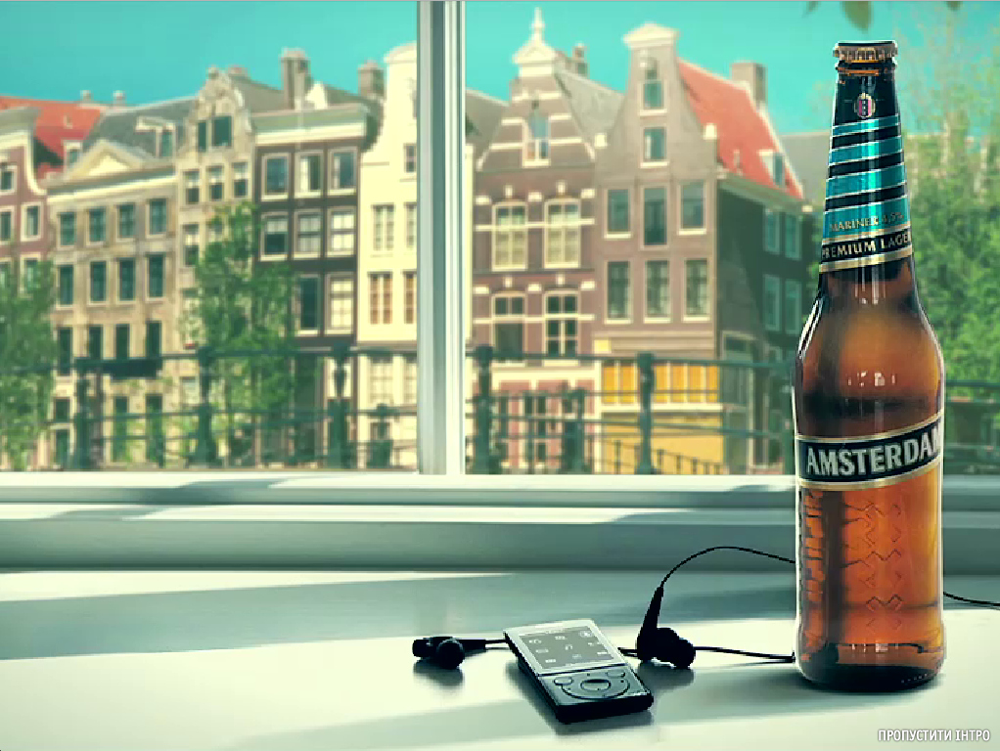
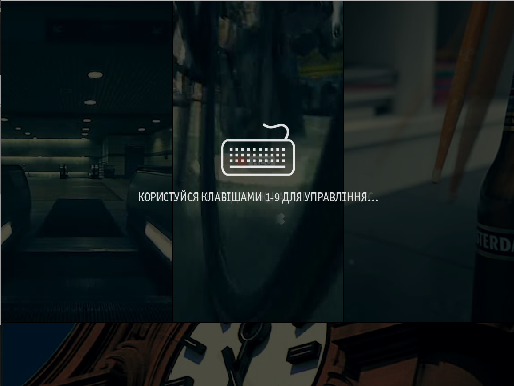
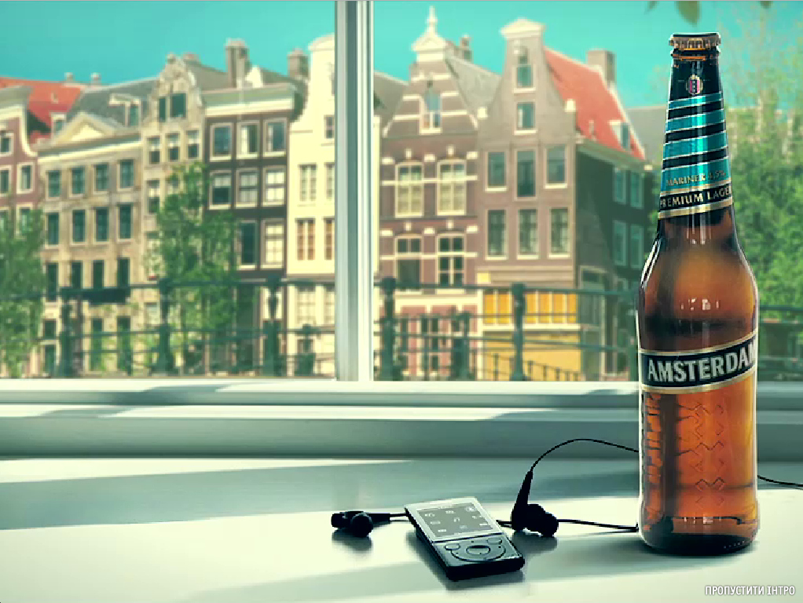
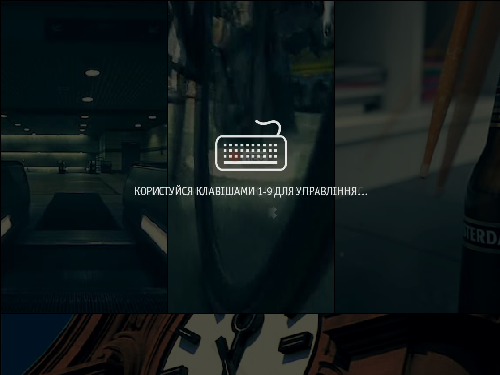
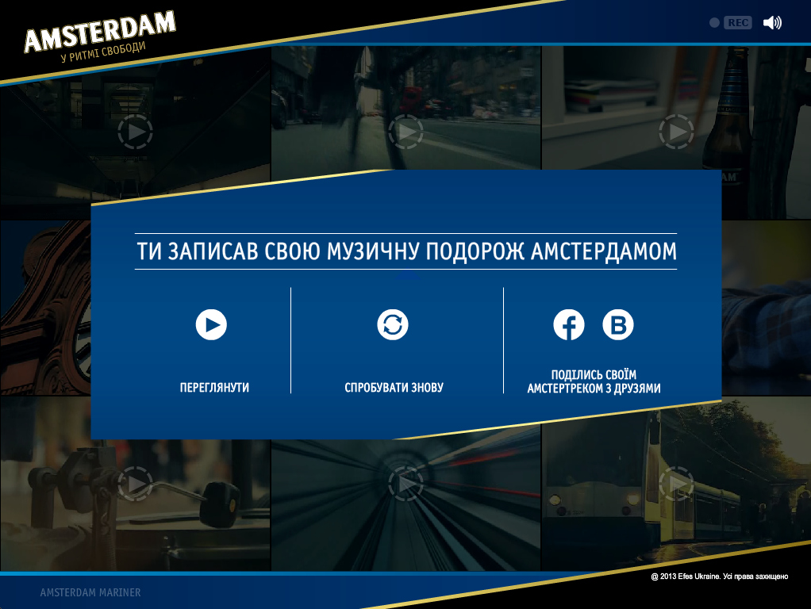
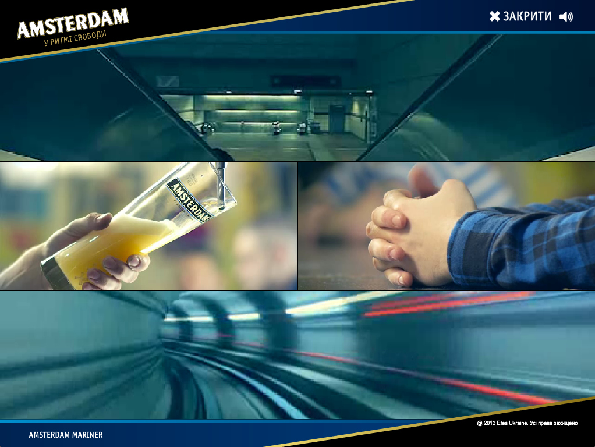
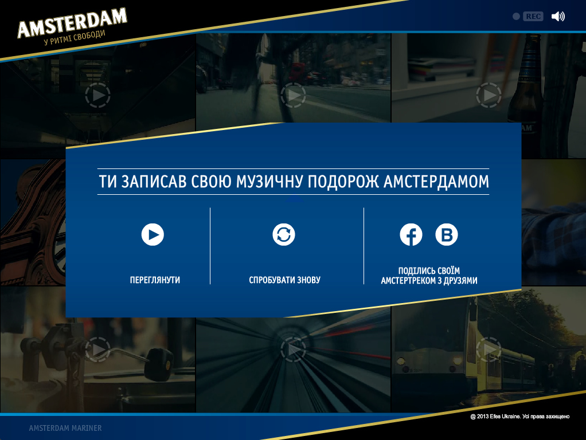
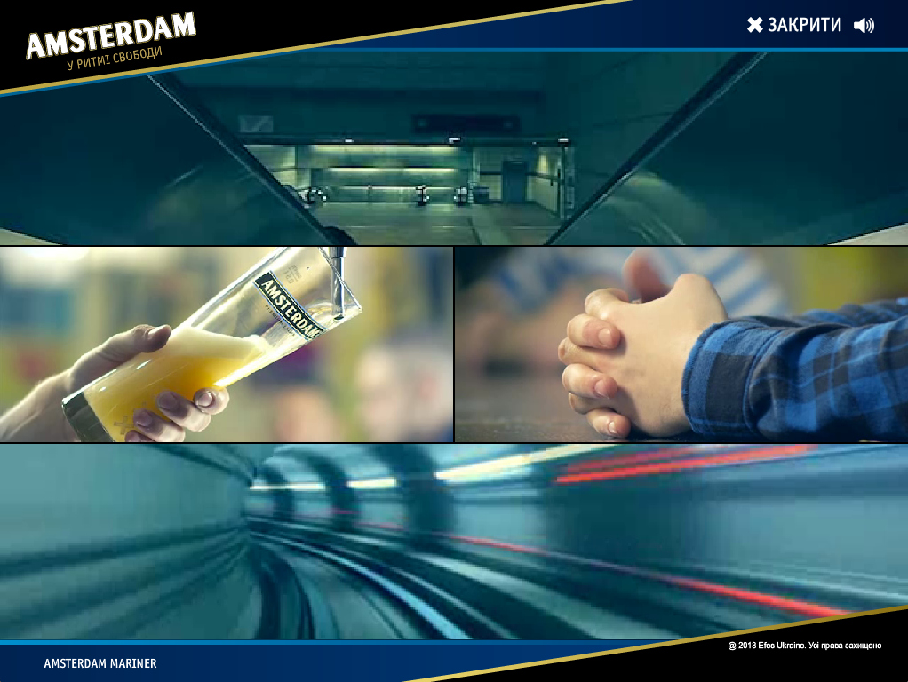

amsterdamusic
Klient: SAB Miller Ukraina, Agencja: Peppermint interactive
http://amsterdamusic.com.ua/ 

 
Zadanie
Stworzyć promo-site dla piwnego brenda Amsterdam mariner. Ta witryna internetowa to jest videomixer. Użytkownik spaceruje Amsterdamem i nagrywa swoją melodię. W rezultacie użytkownik otrzymuje videoclip ze swoim muzykalnym eksperymentem i może podzielić im z przyjaciółmi.
Realizacja
Kluczowym momentem w tej witrynie była jakość dźwięku i precyzyjność animacji. Dla tego dla realizacji wybrałem technologią Flash. Mobilna wersja nie była potrzebna ponieważ przy internecie mobilnym i małym wyświetlacie nie zmogli by dosięgnąć potrzebnej jakość dźwięku i animacji. Najtrudniejszą sześciu była precyzyjność synchronizacji dźwięku i jego bezszwowe sklejanie, jednocześnie zachowując możliwość doładowania dźwięków. Jak się wyjaśniło kiedy zapisujesz plik w mp3 większość audio redaktorów dodaje odrobinę ciszy na początku i w końce. Dla tego bylem zmuszony szukać alternatywny sposób kodowania w mp3.
Jak osnowę wybrałem framework RobotLegs MVC
Projekt został wykonany korzystając z technologii Adobe Flash